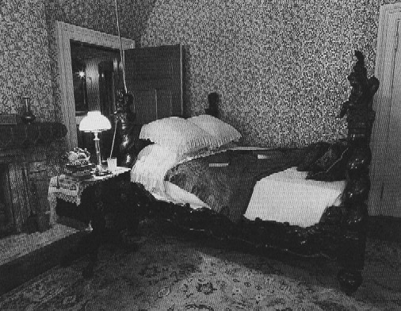

Second Floor Hartford

picture courtesy of Mark Twain
"It
was this same
old elaborately carved black Venetian bedstead--the most comfortable
bedstead that ever
was, space enough in it for a family, and carved angels enough
surmounting its
twisted columns and its
headboard and footboard to bring peace to the sleepers, and pleasant
dreams." Autobiography,
231
Back
to layout | Back
to First Floor | On
to Third Floor
back
to house exterior